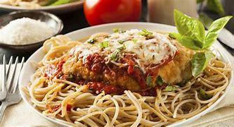

SPAGHETTI

Description
Savor a beautiful spaghetti dish with al dente noodles coated in a rich tomato sauce, topped with Parmesan cheese and garnished with fresh basil. It's a visually appealing and delicious culinary delight that combines vibrant flavors and enticing textures. This beautiful spaghetti dish is a true culinary masterpiece that embodies the art of Italian cuisine, inviting you to savor every moment and indulge in a symphony of flavors.
Ingredients
- Spaghetti noodles
- Tomato sauce or crushed tomatoes
- Garlic cloves
- Onion
- Olive oil
- Salt
- Black pepper
- Dried basil
- Dried oregano
- Fresh basil leaves (for garnish)
- Parmesan cheese (grated, for topping)
Steps
- Fill a large pot with water and bring it to a boil. Add a generous amount of salt to the boiling water.
- Add the spaghetti noodles to the boiling water and cook them according to the package instructions until they are al dente (firm to the bite). Stir occasionally to prevent sticking.
- While the spaghetti is cooking, heat olive oil in a separate pan over medium heat. Add minced garlic and chopped onion to the pan and sauté until they become fragrant and slightly golden.
- Pour the tomato sauce or crushed tomatoes into the pan with the garlic and onion. Season it with salt, black pepper, dried basil, and dried oregano. Stir well to combine the flavors.
- Simmer the tomato sauce over low heat for about 10-15 minutes to allow the flavors to meld together.
- Drain the cooked spaghetti noodles, reserving a small amount of the cooking water.
- Add the cooked spaghetti to the pan with the tomato sauce. Toss the noodles gently in the sauce until they are thoroughly coated. If needed, add a small amount of the reserved cooking water to adjust the consistency of the sauce.
- Remove the pan from the heat and transfer the spaghetti to individual serving plates.
- Garnish each plate with fresh basil leaves and a generous sprinkle of grated Parmesan cheese.
- Serve the spaghetti dish immediately and enjoy the flavors of this classic Italian favorite.
By following these steps, you'll be able to prepare a delicious and satisfying spaghetti dish. Buon appetito!😋